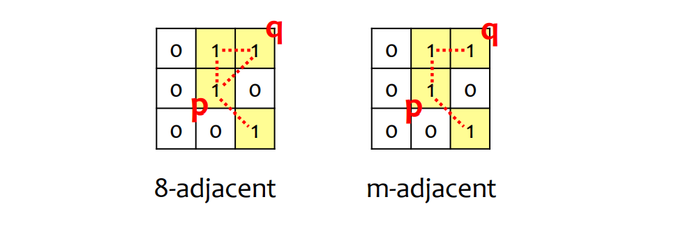
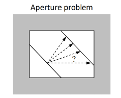

计算机视觉小记
这篇笔记我打算基于 tutorial 做一点 problem-based 的总结。P.S.，Kenneth 课教的好，人长得帅，还有一件 NERV 员工服！计算机视觉又是一个相当「EVA」的学科，已经可以想象他戴着墨镜做出碇司令的经典手势了。
This article is a self-administered course note.
It will NOT cover any exam or assignment related content.
Digital Image Processing
Key point 1: Spatial v.s. Gray-level resolution
- Sampling \(\to\) Spatial resolution (# pixels) \(\to\) Insufficient samples: sampling checkerboards
- Quantization \(\to\) Gray-level resolution (# intensity values) \(\to\) Insufficient gray levels: false contouring
Key point 2: Adjacency & Distance
4-邻接，8-邻接与 m(ixed)-邻接 [不能形成三角形]。

Euclidean 距离 (几何距)，City-clock 距离 (\(|x_1-x_2|+|y_1-y_2|\))，Chessboard 距离 (\(\max(|x_1-x_2|,|y_1-y_2|)\))，\(D_m\) 距离 (m-path 距离)。
Key point 3: Convolution & Filters
Filtering 本质上是卷积，因此满足交换律与结合律。
Linear spatial filtering:
- Smoothing Filters — blurring, noise reduction. 系数之和为 1，plain 区域在 smoothing 后保持原状
- Sharpening Filters — highlight fine details. 系数之和为 0，plain 区域后在 sharpening 之后消失
Order-statistics filtering (一般来说 non-linear，因此不满足卷积的交换/结合律):
- Median filters. Reduce salt-and-pepper noise.
- Max filters. Reduce pepper noise (黑点为 0)
- Min filters. Reduce salt noise (白点为 1)
- Midpoint filters (\(\frac{1}{2}[\max+\min]\)). Reduce Gaussian noise or uniform noise.
Key point 4: Color models
RGB model，full-color image 的 pixel depth 为 24，一共有 \(2^{24}\) 种不同颜色。
YIQ model，Y 分量是辉度 (luminance) 分量，I 与 Q 是色度 (chrominance) 分量。I 与 Q 分量的系数之和均为 0，这是为了防止其捕捉到任何辉度信息 (\(R=G=B\) 时 pixel 所显示的是辉度)。
Feature Extraction
Keypoint 0:
首先注意一个 convention，图像矩阵以左上角为原点
\((0,0)\)，横轴为 \(x\) 轴，纵轴为 \(y\) 轴。但 numpy
矩阵还是以传统的先行再列的形式访问，因此坐标为 \((x,y)\) 的像素在代码中应该写成
img[y][x]。
Key point 1: Canny edge detection
Canny 边缘检测算法的步骤如下 (2D 边缘检测)：
- smooth the image \(I\) by convolving with a 2D Gaussian kernel \(S=G_{\sigma}*I\)
- find the gradient of the smoothed image \(\nabla S\)
- non-maximal suppression: only selects edgels where \(||\nabla S||\) is greater than local values of \(||\nabla S||\) in the direction of \(\pm \nabla S\) (如果没有这一步，生成的边缘将会很厚。这一步相当于把边缘细化到脊线 ridge 上)
- threshold the edgels: only strong edgels with \(||\nabla S||\) above a certain value are retained
- hysteresis: some weak edges are revived if they span the gaps between some strong edgels (保证边缘的连续性从而留下一些弱边缘)
重要参数 \(\sigma\) (3.feature extraction pp.19 网格图)：
- fine-scale Gaussian kernel (较小 \(\sigma\))：检测到更多，更细微的边缘，对 noise 敏感
- large-scale Gaussian kernel (较大 \(\sigma\))：suppress finer details
Aperture problem (孔径问题)：为了分析图像的 motion 特征，我们还需要 corner detection 角点检测！

Key point 2: Harris corner detection
Harris 角点的定义：若局部窗口包含角点，则该窗口沿任意方向移动都有灰度跳变。(平坦区域：任意方向移动均无灰度跳变；边缘：垂直于边缘方向移动有灰度跳变)
以上定义的数学描述是图像窗口在向方向 \((u,v)\) 平移时的平方强度变化 squared change in intensity (这里的 \(w\) 一般是 2D 高斯滤波核，以分配更多注意给中心区域)： \[ E(u,v)=\sum_{x,y}w(x,y)[I(x+u,y+v)-I(x,y)]^2 \] 经泰勒展开和矩阵分析将其近似为： \[ \begin{aligned} E(u,v)&\approx \begin{bmatrix}u&v\end{bmatrix}M\begin{bmatrix} u \\ v\end{bmatrix} \\ \text{where }M&=\sum_{x,y} w(x,y) \begin{bmatrix}I_x^2 & I_xI_y \\I_xI_y & I_y^2\end{bmatrix} \end{aligned} \] 根据基本特征值理论有 \(\lambda_1\leq E(u,v) \leq \lambda_2\)，其中 \(\lambda_1,\lambda_2\) 分别是 \(M\) 的最小与最大特征值，表示窗口向各个方向移动获得的最小与最大灰度变化。据此有：
- case 0: \(\lambda_1\approx \lambda_2\approx 0\): 窗口移动灰度基本不变，为 featureless region
- case 1: \(\lambda_1\approx 0\), \(\lambda_2\) is large: 很显然这是边缘，\(\lambda_1\) 为平行边缘方向，\(\lambda_2\) 为垂直边缘方向
- case 2: \(\lambda_1\), \(\lambda_2\) are both large and distinct: 这是角点！
注意到 \(\lambda_1\lambda_2=\det(A), \lambda_1+\lambda_2=\text{trace}(A)\)，基于此定义角点响应函数 cornerness function \(R\)。Harris 推荐将 \(k\) 设为 \(0.04\sim 0.06\)。 \[ R=\det(M)-k\cdot \text{trace}(M)^2 \] 数学 intuition 这样就差不多了，以下是 Harris 角点检测算法的步骤：
- convert color image to grayscale image
- compute gradient along \(x\), \(y\) axis at each pixel \(I_x,I_y\)
- form images of \(I_x^2,I_y^2\) and \(I_xI_y\), then smooth them with 2D Gaussian kernel
- form image of the cornerness function \(R\)
- locate local maxima in the image of \(R\) as corners
- compute the coordinates of the corners up to sub-pixel accuracy by quadratic approximation (二次曲线近似使得角点的位置精确到次像素程度，同时记得要更新该位置上的 \(R\) 值！痛失 10 分)
- threshold the strong corners
代码如下。虽然背后的数学原理有点难，但实现起来并不复杂 [等 assignment 2 due 了以后再放出]：
1 | # To be released: after Mar.5 |
Perspective & Projective Camera
所谓 camera projection (成像投射) 指的是把世界坐标系中的某个 3D 点投射到像素坐标系中的某个 2D 点的过程。
- Rigid Body Motion. World coordinates \([X, Y, Z]\) to camera coordinates \([X_c,Y_c,Z_c]\)
- Perspective Projection. Camera coordinates \([X_c,Y_c,Z_c]\) to image plane coordinates \([x, y]\)
- CCD Imaging. Image plane coordinates \([x, y]\) to pixel coordinate \([u,v]\)
为 represent points at infinity (vanishing points)，采用 homogenous coordinates \([X,Y,Z]\to [sX,sY,sZ, s]\)。\(s=0\) 时，表示该点在 \([X,Y,Z]\) 方向趋于无限。
- Given points \(\tilde{\mathbf{x_0}}, \tilde{\mathbf{x_1}}\) in homogenous coord, the line passing through is \(\mathbf{I}=\tilde{\mathbf{x_0}}\times \tilde{\mathbf{x_1}}\)
- Given lines \(\mathbf{I_0}, \mathbf{I_1}\), the intersection point is \(\tilde{\mathbf{x}}=\mathbf{I_0}\times \mathbf{I_1}\)
Step 1: Rigid Body Motion. \[ \begin{bmatrix} X_c \\ Y_c \\ Z_c \\ 1 \end{bmatrix}=\begin{bmatrix} \mathbf{R} & \mathbf{T} \\ \mathbf{0} & 1\end{bmatrix}\begin{bmatrix}X \\ Y \\ Z \\ 1\end{bmatrix}=\begin{bmatrix} -\mathbf{v_x^T}- & T_x \\ -\mathbf{v_y^T}- & T_y \\ -\mathbf{v_z^T}- & T_z \\ -0- & 1 \end{bmatrix}\begin{bmatrix}X \\ Y \\ Z \\ 1\end{bmatrix} \] 其中 \(\mathbf{R}\) 是 3X3 rotation matrix，每行分别是 camera coordsys 中 \(x,y,z\) 方向的 unit vector 在 world coordsys 下的表示。而 \(\mathbf{T}\) 是 3X1 translation matrix，它可以看成是从 camera coordsys 中心到 world coordsys 中心的向量。
Step 2: Perspective Projection.
根据相似三角形推出的重要结论：The scaling is \(f/Z_0\): \(f\) is focal length, \(Z_0\) is the distance from the optical center (usually reflected in \(Z\)-axis).
例：给定世界坐标中的一条直线 \(\mathbf{X}_c=\mathbf{a}+\lambda\mathbf{b}=[a_x,a_y,a_z]^T+\lambda[b_x,b_y,b_z]^T\)，求它的 vanishing point。
- Line on the image plane: \(\mathbf{x}=f(\frac{a_x+\lambda b_x}{a_z+\lambda b_z}, \frac{a_y+\lambda b_y}{a_z+\lambda b_z})\). As \(\lambda \to \infty\), the point \(X_c\) moves further down the line, and \(\mathbf{x}\) converges to the vanish point \(\mathbf{v}=\lim_{\lambda\to\infty}f(...)=f(\frac{b_x}{b_z}, \frac{b_y}{b_z})\).
- As expected, the vanishing point depends only on the line's orientation but not no its position. When \(b_z=0\), the line is parallel to the image plane and the vanishing point is at infinity.
在 camera projection matrix 中，perspective projection 表现为： \[ \begin{bmatrix}sx \\ sy \\ s\end{bmatrix}=\begin{bmatrix}f & 0 & 0 & 0 \\ 0 & f & 0 & 0 \\ 0 & 0 & 1 & 0\end{bmatrix}\begin{bmatrix}X_c \\ Y_c \\ Z_c \\ 1\end{bmatrix} \] 本质上就是 \(x=fX_c/Z_c, y=fY_c/Z_c\)。
Step 3. CCD imaging.
将 image plane 上的 2D 点 \(\mathbf{x}=(x,y)\) 转化为像素坐标 \(\mathbf{w}=(u,v)\)。 \[ \begin{aligned} u &= k_ux + u_0 \\ v &= k_vy + v_0 \\ \\ \text{i.e., }\begin{bmatrix}su\\sv\\ s\end{bmatrix}&=\begin{bmatrix}k_u & 0 & u_0 \\ 0 & k_v & v_0 \\ 0 & 0 & 1\end{bmatrix}\begin{bmatrix} sx \\ sy \\ s\end{bmatrix} \end{aligned} \]
- \((u_0,v_0)\) 是 principal point，它是 optical axis 与 CDD array 的交点 (即 image plane 原点的像素坐标表示)。
- \(k_u,k_v\) 是 scale factors，分别是在 \(u\) (i.e., \(x\)) 和 \(v\) (i.e., \(y\)) 方向上单位长度的像素数。
Key point 1. Full perspective camera model (10 DOFs). \[ \begin{aligned} \mathbf{P}_{ps}&=\mathbf{P}_c\mathbf{P}_p\mathbf{P}_r \\ &= \begin{bmatrix}k_u & 0 & u_0 \\ 0 & k_v & v_0 \\ 0 & 0 & 1\end{bmatrix}\begin{bmatrix}f & 0 & 0 & 0 \\ 0 & f & 0 & 0 \\ 0 & 0 & 1 & 0\end{bmatrix}\begin{bmatrix}\mathbf{R} & \mathbf{T} \\ \mathbf{0}_3^{T} & 1\end{bmatrix} \\ &=\begin{bmatrix}k_u & 0 & u_0 \\ 0 & k_v & v_0 \\ 0 & 0 & 1\end{bmatrix}\begin{bmatrix}f & 0 & 0 \\ 0 & f & 0 \\ 0 & 0 & 1\end{bmatrix}\begin{bmatrix}1 & 0 & 0 & 0 \\ 0 & 1 & 0 & 0 \\ 0 & 0 & 1 & 0\end{bmatrix}\begin{bmatrix}\mathbf{R} & \mathbf{T} \\ \mathbf{0}_3^{T} & 1\end{bmatrix} \\ &= \begin{bmatrix}\alpha_u & 0 & u_0 \\ 0 & \alpha_v & v_0 \\ 0 & 0 & 1\end{bmatrix}\begin{bmatrix}\mathbf{R} & \mathbf{T}\end{bmatrix} \\ &= \mathbf{K} \begin{bmatrix}\mathbf{R} & \mathbf{T}\end{bmatrix} \end{aligned} \] 这里 \(\alpha_u=fk_u,\alpha_v=fk_v,u_0,v_0\) 描述的是相机的 intrinsic parameters，其余的 (rotation/translation matrix) 描述的是 extrinsic parameters。
- Camera calibration matrix \(\mathbf{K}\). 4 DOFs: \(k_u,k_v,\alpha_u,\alpha_v\). Focal length \(f\) and pixel scaling factors \(k_u,k_v\) are not independent in a way that they cannot be uniquely separated based solely on the resulting image.
- Rotation matrix \(\mathbf{R}\). 3 DOFs: roll, pitch, yaw. 3x3 elements, but 6 non-linear constraints are imposed (orthogonality \(\mathbf{R^T R}=I\)).
- Translation matrix T. 3 DOFs.
Key point 2. Projective camera model (11 DOFs).
Projective camera 是一个 general 3x4 matrix \(\mathbf{P}\)，它没有任何 constraints。由于 \(\mathbf{P}\) 的 overall scale 对 camera projection 的结果无影响，不妨将 \(p_{23}\) 设为 \(1\)，剩余的元素贡献了 11 DOFs。
Perspective camera 是 Projective camera 的一个特例。
给定 projection matrix \(\mathbf{P}\)，\((X_d,Y_d,Z_d)\) 方向上 vanishing point 的 2D 像素坐标是 \(\tilde{\mathbf{v}}=\mathbf{P}\begin{bmatrix}X_d & Y_d & Z_d & 0\end{bmatrix}^T\) 。
Key point 3. Planar/Linear rigid body transformation. 去除多余维度对应的列即可。
Weak-Perspective & Affine Camera
Key point 1. Weak-Perspectie projection.
应用 perspective projection 后，现实世界中的平行线在图像中往往交于 vanishing point。但我们也能观察到在有些图像中，平行的性质，以及平行线间的 length ratios 在图像中得到了保留。这是因为 the depth variation \(\Delta Z\) of the objects in the scene are small compared with the average distance \(Z_{avg}\) of the objects from the camera.
对于具有以上性质的图像，我们可以使用 weak-perspective projection 来 model。回忆 perspective projection 中的 scaling \(f/Z_0\)，每个 3D 世界坐标都有彼此各异的 \(Z_0\)；weak-perspective camera 将其统一用 \(Z_{avg}\) 进行替代。 \[ \begin{bmatrix} sx \\ sy \\ s\end{bmatrix}=\begin{bmatrix} f & 0 & 0 & 0 \\ 0 & f & 0 & 0 \\ 0 & 0 & 0 & Z_{avg}\end{bmatrix}\begin{bmatrix}X_c\\ Y_c\\ Z_c \\ 1\end{bmatrix} \] 其余步骤 (rigid body motion, CCD imaging) 没有变化 \(\mathbf{P}_{\text{wp}}=\mathbf{P}_\text{c}\mathbf{P}_{\text{pll}}\mathbf{P}_\text{r}\)。
Key point 2. Image error introduced by WP approximation. \[ [u,v]-[u',v']=([u,v]-[u_0,v_0])\frac{\Delta Z}{Z_{\text{avg}}} \]
- \(\Delta Z<<Z_{\text{avg}}\)
- image points are closer to the principal point (i.e. \(u-u_0\approx v-v_0\approx 0\))
Step 3. Affine camera.
与 projective camera 之于 perspective camera 类似，affine camera 是 weak-perspective camera 的 non-linear constraints 被 relax 过后的更一般的模型。 \[ \mathbf{P}_{\text{aff}}=\begin{bmatrix}p_{00} & p_{01} & p_{02} & p_{03} \\ p_{10} & p_{11} & p_{12} & p_{13} \\ 0 & 0 & 0 & p_{23} \end{bmatrix} \] 不妨将 overall scale \(p_{23}\) 设为 1，affine camera 有 8 DOFs。Planar affine camera 去除第三列，有 6 DOFs。
Key point 4. Planar scene invariants (measurement which does not change across different viewpoints of the same object). [chapter 6 pp.18]
- Euclidean camera (3 DOFs: rotationX1, translationX2)
- similarity camera (4 DOFs: +scalingX1)
- affine camera (6 DOFs: +stretchingX1, shearingX1)
- projective camera (completely unrestricted 8DOFs: +equation of the vanishing lineX2)
一个重要的 projective invariant: cross-ratio - the ratio of two ratios of lengths.
Camera Calibration
Reference
This article is a self-administered course note.
References in the article are from corresponding course materials if not specified.
Course info: COMP3317, Taught by Prof. Kenneth K.Y. Wong
Course textbook: Computer Vision – A Modern Approach, Forsyth & Ponce